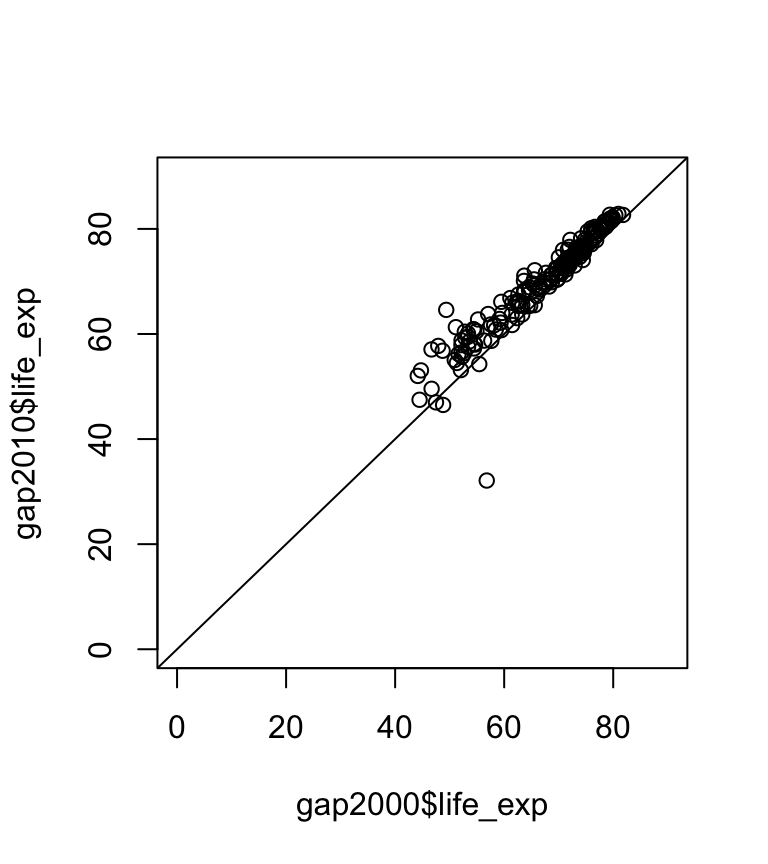

4 Summarizing data
Having loaded and thoroughly explored a data set, we are ready to distill it down to concise conclusions. At its simplest, this involves calculating summary statistics like counts, means, and standard deviations. Beyond this is the fitting of models, and hypothesis testing and confidence interval calculation. R has a huge number of packages devoted to these tasks and this is a large part of its appeal, but is beyond the scope of today.
Loading the data as before, if you have not already done so:
library(tidyverse)
geo <- read_csv("r-intro-2-files/geo.csv")
gap <- read_csv("r-intro-2-files/gap-minder.csv")
gap_geo <- left_join(gap, geo, by="name")4.1 Summary functions
R has a variety of functions for summarizing a vector, including: sum, mean, min, max, median, sd.
## [1] 2.5We can use these on the Gapminder data.
## [1] 6949495061## [1] NA4.2 Missing values
Why did mean fail? The reason is that life_exp contains missing values (NA).
## [1] 56.20 76.31 76.55 82.66 60.08 76.85 75.82 73.34 81.98 80.50 69.13
## [12] 73.79 76.03 70.39 76.68 70.43 79.98 71.38 61.82 72.13 71.64 76.75
## [23] 57.06 74.19 77.08 73.86 57.89 57.73 66.12 57.25 81.29 72.45 47.48
## [34] 56.49 79.12 74.59 76.44 65.93 57.53 60.43 80.40 56.34 76.33 78.39
## [45] 79.88 77.47 79.49 63.69 73.04 74.60 76.72 70.52 74.11 60.93 61.66
## [56] 76.00 61.30 65.28 80.00 81.42 62.86 65.55 72.82 80.09 62.16 80.41
## [67] 71.34 71.25 57.99 55.65 65.49 32.11 71.58 82.61 74.52 82.03 66.20
## [78] 69.90 74.45 67.24 80.38 81.42 81.69 74.66 82.85 75.78 68.37 62.76
## [89] 60.73 70.10 80.13 78.20 68.45 63.80 73.06 79.85 46.50 60.77 76.10
## [100] NA 73.17 81.35 74.01 60.84 53.07 74.46 77.91 59.46 80.28 63.72
## [111] 68.23 73.42 75.47 65.38 69.74 NA 66.18 76.36 73.55 54.48 66.84
## [122] 58.60 NA 68.26 80.73 80.90 77.36 58.78 60.53 81.04 76.09 65.33
## [133] NA 77.85 58.70 74.07 77.92 69.03 76.30 79.84 79.52 73.66 69.24
## [144] 64.59 NA 75.48 71.64 71.46 NA 68.91 75.13 64.01 74.65 73.38
## [155] 55.05 82.69 75.52 79.45 61.71 53.13 54.27 81.94 74.42 66.29 70.32
## [166] 46.98 81.52 82.21 76.15 79.19 69.61 59.30 76.57 71.10 58.74 69.86
## [177] 72.56 76.89 78.21 67.94 NA 56.81 70.41 76.51 80.34 78.74 76.36
## [188] 68.77 63.02 75.41 72.27 73.07 67.51 52.02 49.57 58.13R will not ignore these unless we explicitly tell it to with na.rm=TRUE.
## [1] 70.34005Ideally we should also use weighted.mean here, to take population into account.
## [1] 70.96192NA is a special value. If we try to calculate with NA, the result is NA
## [1] NAis.na can be used to detect NA values, or na.omit can be used to directly remove rows of a data frame containing them.
## [1] FALSE FALSE TRUE FALSE## [1] 70.961924.3 Grouped summaries
The summarize function in dplyr allows summary functions to be applied to data frames.
## # A tibble: 1 x 1
## mean_life_exp
## <dbl>
## 1 71.0So far unremarkable, but summarize comes into its own when the group_by “adjective” is used.
## # A tibble: 22 x 2
## year mean_life_exp
## <dbl> <dbl>
## 1 1800 30.9
## 2 1810 31.1
## 3 1820 31.2
## 4 1830 31.4
## 5 1840 31.4
## 6 1850 31.6
## 7 1860 30.3
## 8 1870 31.5
## 9 1880 32.0
## 10 1890 32.5
## # … with 12 more rowsChallenge: summarizing
What is the total population for each year? Plot the result.
Advanced: What is the total GDP for each year? For this you will first need to calculate GDP per capita times the population of each country.
group_by can be used to group by multiple columns, much like count. We can use this to see how the rest of the world is catching up to OECD nations in terms of life expectancy.
result <- summarize(
group_by(gap_geo,year,oecd),
mean_life_exp=weighted.mean(life_exp, population, na.rm=TRUE))
result## # A tibble: 44 x 3
## # Groups: year [22]
## year oecd mean_life_exp
## <dbl> <lgl> <dbl>
## 1 1800 FALSE 29.9
## 2 1800 TRUE 34.7
## 3 1810 FALSE 29.9
## 4 1810 TRUE 35.2
## 5 1820 FALSE 30.0
## 6 1820 TRUE 35.9
## 7 1830 FALSE 30.0
## 8 1830 TRUE 36.2
## 9 1840 FALSE 30.0
## 10 1840 TRUE 36.2
## # … with 34 more rows
A similar plot could be produced using geom_smooth. Differences here are that we have full control over the summarization process so we were able to use the exact summarization method we want (weighted.mean for each year), and we have access to the resulting numeric data as well as the plot. We have reduced a large data set down to a smaller one that distills out one of the stories present in this data. However the earlier visualization and exploration activity using ggplot2 was essential. It gave us an idea of what sort of variability was present in the data, and any unexpected issues the data might have.
4.4 t-test
We will finish this section by demonstrating a t-test. The main point of this section is to give a flavour of how statistical tests work in R, rather than the details of what a t-test does.
Has life expectancy increased from 2000 to 2010?
gap2000 <- filter(gap_geo, year == 2000)
gap2010 <- filter(gap_geo, year == 2010)
t.test(gap2010$life_exp, gap2000$life_exp)##
## Welch Two Sample t-test
##
## data: gap2010$life_exp and gap2000$life_exp
## t = 3.0341, df = 374.98, p-value = 0.002581
## alternative hypothesis: true difference in means is not equal to 0
## 95 percent confidence interval:
## 1.023455 4.792947
## sample estimates:
## mean of x mean of y
## 70.34005 67.43185Statistical routines often have many ways to tweak the details of their operation. These are specified by further arguments to the function call, to override the default behaviour. By default, t.test performs an unpaired t-test, but these are repeated observations of the same countries. We can specify paired=TRUE to t.test to perform a paired sample t-test and gain some statistical power. Check this by looking at the help page with ?t.test.
It’s important to first check that both data frames are in the same order.
## [1] TRUE##
## Paired t-test
##
## data: gap2010$life_exp and gap2000$life_exp
## t = 13.371, df = 188, p-value < 2.2e-16
## alternative hypothesis: true difference in means is not equal to 0
## 95 percent confidence interval:
## 2.479153 3.337249
## sample estimates:
## mean of the differences
## 2.908201When performing a statistical test, it’s good practice to visualize the data to make sure there is nothing funny going on.

This is a visual confirmation of the t-test result. If there were no difference between the years then points would lie approximately evenly above and below the diagonal line, which is clearly not the case. However the outlier may warrant investigation.